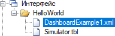
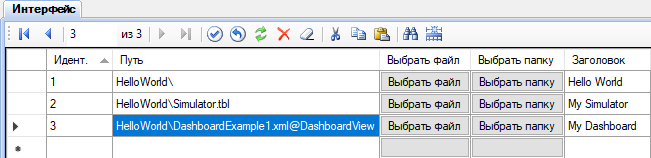

Плагин Дэшборды отображает полезные виджеты на дэшбордах: графики, текущие данные и произвольные фреймы, например, изображение с камеры видео-наблюдения. Настройки каждого дэшборда позволяют задать количество столбцов и соотношение сторон виджетов.
Сначала необходимо выполнить общую последовательность установки плагинов, а затем выполнить несколько дополнительных действий:
Конфигурация каждого дэшборда сохраняется в отдельном файле формата XML. Пример файла дэшборда DashboardExample1.xml содержится в установочном пакете плагина. Файлы дэшбордов могут располагаться в директории интерфейса, либо в директории хранилища Вебстанции. Предпочтительным является 1-й вариант.
Чтобы ссылки на дэшборды отображались в дереве представлений Вебстанции, в проекте необходимо выполнить следующие настройки:


Обозначение @DashboardView в составе пути указывает на тип представления. Права пользователей на дэшборды настраиваются через таблицу Права базы конфигурации аналогично правам на табличные представления и мнемосхемы.
Кроме того, файлы дэшбордов могут располагаться в директории хранилища Вебстанции. В этом случае щёлкните пункт Дэшборды главного меню Вебстанции, чтобы открыть список доступных дэшбордов. Примеры расположения дэшбордов в хранилище:
ScadaWeb\storage\allusers\Dashboard\ - дэшборды, доступные всем пользователям;
ScadaWeb\storage\myuser\Dashboard\ - дэшборды, доступные пользователю MyUser.
Рассмотрим содержимое файла конфигурации дэшборда:
<?xml version="1.0" encoding="utf-8" ?>
<DashboardConfig>
<DashboardOptions>
<Name>Dashboard Example 1</Name>
<ColumnCount>2</ColumnCount>
<AspectRatio>1.33</AspectRatio>
</DashboardOptions>
<Widgets>
<Widget type="Chart" cnlNums="101,102" viewIDs="2,2" period="2" />
<Widget type="Chart" cnlNums="101,103" viewIDs="2,2" mode="fixed" period="2" title="Sample Chart" config="PlgChartPro.xml" />
<Widget type="CurData" cnlNums="101,102,103,104,105,106,107,115" viewIDs="2,2,2,2,2,2,2,2" title="Sample Data" />
<Widget type="View" viewID="2" />
<Widget type="CustomUrl" url="https://www.youtube.com/embed/EEIk7gwjgIM" />
</Widgets>
</DashboardConfig>
Секция DashboardOptions содержит общие параметры дэшборда:
Name - наименование дэшборда,
ColumnCount - количество колонок от 1 до 4 (на небольших экранах мобильных устройств виджеты в любом случае располагаются в одной колонке),
AspectRatio - отношение ширины виджетов к высоте.
Секция Widgets содержит список виджетов, которые отображаются на дэшборде. Количество виджетов произвольное. Однако слишком большое количество виджетов на одном дэшборде может снизить быстродействие веб-приложения.
Поддерживаются виджеты следующих типов:
Chart - график заданных входных каналов,
CurData - таблица текущих значений заданных входных каналов,
View - представление с указанным идентификатором,
CustomUrl - произвольная веб-страница.
Для виджетов типа Chart и CurData нужно не только указать номера входных каналов, используемых виджетом, но также указать идентификаторы представлений, которые содержат эти входные каналы. Идентификаторы представлений необходимы для контроля прав доступа пользователя.